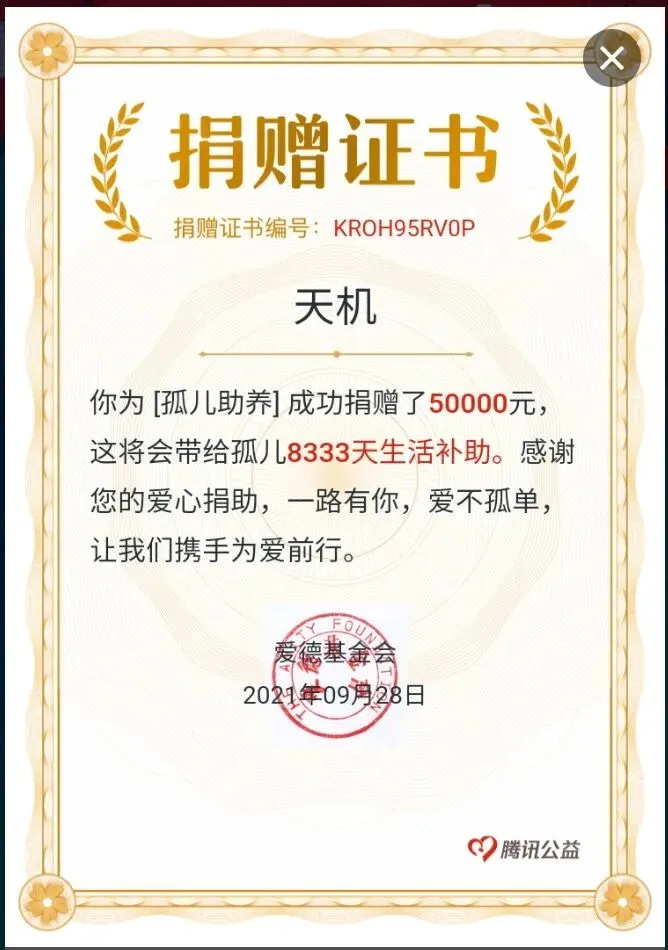

房企的骚扭了我的腰
房企的骚，扭了我的腰
这段时间很忙，没更新，也遇到了一些困难。还好，最终克服困难，挺过来了。
因为时间和精力原因，天机此前持续了多年的慈善，从今天起开始转向腾讯公益。这是在腾讯公益的第一次尝试，成效好的话，后续的目标是每年捐赠30万。

本公众号菜单栏上，已开设相关窗口，读者们可以查天机的每一笔捐赠。天机的商城开始盈利了，虽然微利，但大部分捐掉，也希望能通过这个平台，持续帮助到更多有需要的人。
言归正传，进入主题。
NO. 1｜壹
融创今天发了一则声明，声明共有4点内容。
第一点，解释融创绍兴公司的“求援事件”，是绍兴公司负责人在有关领导视察项目之际，想借机就已售房源的网签问题寻求支持。初步整理了相关文字内容，作为口头汇报的腹稿，但在9月24日上午9时因操作失误发至了绍兴本地的一个房产交流群，造成了信息的外泄。
融创称，从未有过、也没有任何需求和意愿向政府提交类似报告。就此事件对公众造成的误导深表歉意。
翻译一下：是职业经理人的个人工作失误行为，融创没有这个意愿也没有这个需求。
三四点还是列数据，说明融创深耕绍兴的成就和融创集团的销售数据。
现在房企一列数据，大众的感觉，就是要被实锤，毕竟恒大的前车之鉴在那。这声明还有很大的改进提升空间。
权当融创以上的声明全部真实。我们更应该关注的是，目前市场上流传很广的融创华北区域和华南区域大量项目在寻求转让的真实性。若属实，那么， 从买买买到卖卖卖，是一个很强烈的信号。
NO. 2｜贰
从福晟到泰禾、从祥生到富力、从蓝光到恒大......我们已经见过了太多房企的公告声明翻车。
在房企这两年的一通瞎操作下，大众纷纷不相信声明、不相信辟谣，不相信律师函，现在连报警都不相信了。
其实不是大众不相信辟谣、声明、律师函、报警，大众只是不相信房企，觉得房企不可信而已。
而造成这个局面的，不是大众，而是房企自己。
其实最开始，严正声明、律师函和报警都还没有这么通货膨胀。 当时的房企只是发公告澄清一下。大部分人，只要房企发声明，基本上都会信。
但部分房企说话就像放屁一样，而且放屁的次数真的是太多了。
房企说一次谎，我们可以理解为失误；房企说两次谎，我们可以理解为错误；房企说三次谎，我们可以理解为有苦楚。
如果还有第四次、第五次，是不是太过分了？
现在房企发声明也好，报警也好， 本意已经从澄清变成了震慑，带着强权和傲慢，还希望别人相信 。
其实， 房企唯一需要变的，是那颗想要愚弄大众的心 。
NO. 3｜叁
更过分的事，以资本的身姿启动钞能力，发动一众营销号，到处发严重失实的宣广。
企业文化一塌糊涂，却在宣广中装裱得人情味十足；依靠拙劣的财技，将负债转移至表外隐藏起来的“降档”，也欣喜奔走，广告四方；裁员裁得异常凶猛，不仅矢口否认，还大言不惭属正常架构调整......
老读者很清楚，这两年，天机写过的房企和事件，有很多已经应验了。福晟、泰禾、华夏幸福、蓝光、恒大、富力、新力等等一干房企，都能从过往的文章中找到缘由。
房企 靠着钞能力，掩盖并篡改了信息的真实性 。一旦有人试图戳破它的真面目，面临的，是糖衣炮弹，是威胁，是水军，是黑子，甚至是约谈喝茶。
虚假的信息，使小白中招，刚进行业就入了坑，人生因此改写；职业经理人中招，踏入坑中，改变的，是收入，甚至职业生涯走向；供应商中招，一个企业，N多家庭，就此转向；购房的老百姓中招，几乎是万劫不复.....
所以信息的真实性很重要。 并不是反对房企发广告，我们反对的，是房企发虚假广告，还不让说 。
更有甚者，一些营销号做惯了房企的狗腿子，犬吠变得比房企更积极，你说他的问题，他一边辟谣说你造谣，一边说上诉。
关键是，不告你诽谤，告你侵犯名誉权。
心虚得不行，应该告诽谤， 因为 ** 名誉权保护的是个人名誉不受侵犯，而不能证明你没有干过那些缺德事 ** 。
NO. 4｜肆
有人说，几个月前恒大的基本盘还是好的。 这种要么是蠢，要么是装傻。
可以翻看一下这种人的历史，看是不是接过很多恒大的广告，或许是话实在圆不回来了，就睁眼说瞎话。
恒大的基本盘就没好过，依靠的一向是财务化妆术。
恒大近五年经营活动没产生正的现金流，融资的大头3100亿，投到了和主业不太相关的投资活动中。土储？大量拖欠土地款。 未来一年内要到期的债务高达12000亿元。
高杠杆并不是决定房企生死的核心因素，核心资产的变现能力才是企业的生命线。融创区别于恒大的地方，在于核心资产的变现能力足够强。
一方面是房企以资本手段让营销号赞扬、歌颂自己，一方面，房企自身的行为又极不厚道。
2019年底至2020年初，富力的大股东李思廉和张力，通过一系列操作，将富力物业以3亿元的交易对价从上市公司的体系中剥离到个人名下。同样操作的还有闽系房企旭辉。
本月，以百亿的价格卖给碧桂园，短短一年九个月时间，净赚超90亿元。 损害的，却是无数中小股东的利益。
房企以资本的手段，高超得不仅要堵住悠悠之口，还要驱使人说鬼话，更想洗脑众人。这是值得警惕的事。
NO. 5｜伍
春节前，天机写过一篇文章，是粤系房企敏捷地产下属子公司23岁刚毕业女生，被39岁的已婚上司彭某带去喝酒，酒后被下迷药身亡。
当时文章引发了极大关注，在官媒跟进后，更是迅速得到了有关部门的关注和处理。
然而，这篇文章也被和谐了，唉。
如今，事件有了新的进展：起诉书显示，佛山市检察院指控称，彭某趁女孩入睡之际，将七氟烷倒在纸巾上，放置于女孩鼻子下方使其吸入，致女孩昏迷后实施奸淫行为。
最扯淡的是，彭某还仗着阳痿给自己辩护。一直坚称”因无法勃起而未能得逞，没有成功发生性行为“。
以魔法治魔法： 这玩意长在你身上也没用，不如阉割了吧？
此案，10月14日，将在佛山中院开庭审理。
按日期浏览全部来源（同日按条目标识排序）